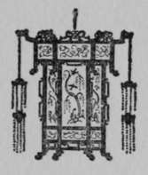

Foreign Magic: Tales of Every-Day China | by Jean Carter Cochran
Foreign Magic, Tales Of Every-Day China, is a novel with experiences that the authour had in China.
| Title | Foreign Magic: Tales of Every-Day China |
| Author | Jean Carter Cochran |
| Publisher | Missionary Education Movement of the United States and Canada |
| Year | 1919 |
| Copyright | 1919, Missionary Education Movement of the United States and Canada |
| Amazon | Foreign Magic: Tales of Every-Day China |
Foreign Magic, Tales Of Every-Day China By Jean Carter Cochran, Author Of "The Rainbow In The Rain," "Nancy's Mother," Etc.
To S. C., This Book Is Affectionately Dedicated
 Foreign Magic
Foreign Magic- Not hedged about by sacerdotal rule, He walks the fellow of the scarred and weak, Liberal and wise his gifts; he goes to school To justice; and he turns the other cheek. He looks not holy, si...
- Foreword
- SOMEWHERE in China the plains stretch mile upon mile, much farther than the eye can see. Many days it takes to traverse these plains by slow-going native cart, by donkey, or on foot, and the stranger ...
- I. The Shadow On The Light Of Asia
- I THINK a person's religion is like their skin; they are born with it and they cannot alter it. Besides, the Orientals are happy in their religion; then why under heaven should we seek to change it? I...
- I. The Shadow On The Light Of Asia. Continued
- If Shanghai had been a wonder city to us, it is hard to imagine what it was to Li Sao Tze. Try and realise for yourself what your own sensations would be if you had lived in the third or fourth centur...
- II. Weh Sao Tze The Militant
- ONE beautiful afternoon in late October the tiny living-room of our Chinese house was flooded with sunshine which touched the soft red-stained walls and the vases of gay chrysanthemums that stood in e...
- II. Weh Sao Tze The Militant. Continued
- The day passed off with much festivity. The boys outdid themselves as shepherds and wise-men; the kids, which they carried in lieu of lambs, bleated plaintively the while, giving a touch of realism to...
- III. Mr. Chang Of The Crystal Spring Village
- AGREY evening had settled on the village of the Crystal Spring. There had been a soft drizzle all day and even the Crystal Spring lay deep in mud and so belied its name. There was, in fact, nothing mu...
- III. Mr. Chang Of The Crystal Spring Village. Continued
- Finally, weary of responding to so much insistent curiosity, and remembering his purpose in coming, the stranger thought that it was his turn to lead the conversation. Turning to the necromancer, he s...
- IV. Pere Perrin
- THREE ravens flew overhead, their black wings casting a sinister shadow over the land; suddenly, with hoarse croaks, they wheeled and descended on a brown field which showed not even a blade of grass ...
- IV. Pere Perrin. Continued
- Thus quickly was relief work under way, but before leaving for the boat Pere Perrin wrote the following letter: * March 1st, 1911. Dear Dr. Scott: I thank you most heartily for your kind lett...
- V. A Chinese Doctor
- DO not take off your shoes until you come to the river brink, so runs the pithy Chinese proverb, from which the wayfaring man, though a foreigner, may easily gather that bridges are scarce in some pa...
- V. A Chinese Doctor. Part 2
- If it had not been for the foreigners I might be doing that, thought Dong Sien Sung; I am not so badly off after all. Unfortunately, such worthy thoughts were banished, for not far away the you...
- V. A Chinese Doctor. Part 3
- It will give me great honour to call upon your most revered parent, Dong Sien Sung said without much enthusiasm. Then, gathering his courage together for his confession, he announced: Dr. Scott, I ...
- V. A Chinese Doctor. Part 4
- She greeted him with great surprise. But you must not come in, she said, the house is quarantined; you might take the fever and you must think of your own life and that of your family. I have ...
- VI. The Incense Burner
- CHANG Dah Mah sat sipping her tea with deep indrawn breaths of content; she nodded her head sagely to give emphasis to the remark she was making. So I said to the foreign lady, 'Books won't do, Mrs. ...
- VI. The Incense Burner. Part 2
- The Din And Ci Vigor Of The Crowded Street Seem Far Removed From The Quiet Garden Within The Courtyard Of The Chinese. Chang Dah Mali helped out a little by doing sewing; indeed, it was* in this wa...
- VI. The Incense Burner. Part 3
- The following morning Chang Dah Mah arose earlier than usual so that she would be sure to get away in good time for the mile walk to the foreigner's compound. How her family would-jeer, she thought, i...
- VII. How Betty Saved The Kiddies
- BETTY put down her story-book and sighed almost from her boots. She wished that she was not only just thirteen; it must be perfectly lovely to be as old as William the Conqueror and go into the heat...
- VIII. A Gone Goose
- TROUGHOUT the long days of July and August the low plains of Central China lie steaming in the sun; the humidity is terribly high and the effect on the human constitution can be compared only to a vap...
- VIII. A Gone Goose. Continued
- I think it is a perfectly splendid idea; how clever you are to think of it, and to use the Chinese methods! Only a person who was steeped in Chinese customs would have dreamed of such a thing. Pl...
- IX. The Devious Ways Of A House-Boat
- HELEN BRETT was a slave to time and she knew it. She had known it for five years, and because of this knowledge her nerves had begun to give way. She confessed to the doctor that the sight of a clock ...
- IX. The Devious Ways Of A House-Boat. Part 2
- All thought of leaving that day had to be abandoned, and as the next day was Sunday, they were forced to put off their departure until Monday morning. On Saturday night as they were about to retire, H...
- IX. The Devious Ways Of A House-Boat. Part 3
- My dear, I do not own this boat, and so cannot prevent it; if I tried we would probably be mobbed. Anyway, you cannot change people's superstitions by force, but only by conviction. As for your other...
- IX. The Devious Ways Of A House-Boat. Part 4
- Matilda! Matilda! what is that? she said in a hoarse whisper. What is what? came the sleepy answer. That scraping sound; do you not hear it? Then there was a scream and Matilda bounded ...
- X. Foreign Magic. Part I
- IT may as well be admitted in the beginning that Wang Sao Tze was no angel. Her neighbours would say, with a shake of the head, when her shrill scoldings disturbed the peace of the hamlet, There is n...
- X. Foreign Magic. Part I. 2
- In the street the stranger's donkey boy held another audience under his spell by marvellous accounts of the manners and possessions of the foreigners of Feng Ti Fu. The story of the wonders lost nothi...
- X. Foreign Magic. Part I. 3
- In Anne Waring's company the dreaded examination was easy, and when the doctor announced that her case was serious but curable, requiring, however, an operation and several weeks and perhaps months of...
- Foreign Magic. Part II
- In those days of which I write, the Twin Dog Village, settled as it was in the midst of the most densely populated part of China, had nothing to distinguish it from other villages. It seemed cut from ...
- Foreign Magic. Part II. 2
- The star of hope that she kept ever burning bright before her through all this discouragement, was the thought of the inquirers' class that was to be held in two months and which she had promised to a...
- Foreign Magic. Part II. 3
- There must be something in it, he said, to make them do these good works. To build up character is to acquire merit, and he set himself diligently to read the book of Matthew. Any one who could...